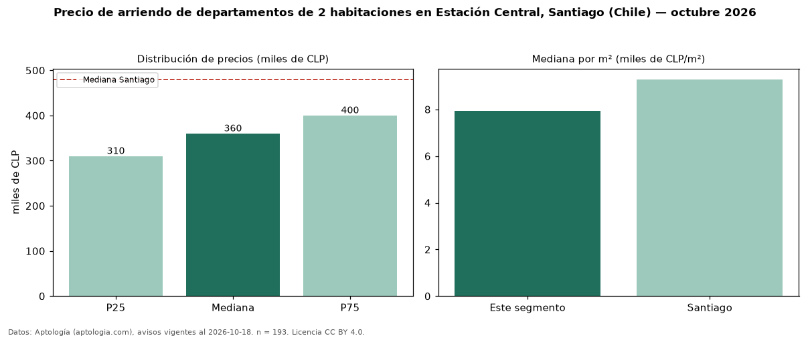

Precio de arriendo de departamentos de 2 habitaciones en Estación Central, Santiago (Chile) — octubre 2026
CLP 360.000 al mes es el canon mediano de departamentos de 2 habitaciones en arriendo en Estación Central, Santiago (Chile) (n = 193 avisos). Frente a la mediana de Santiago para departamentos de 2 habitaciones (CLP 480.000), queda 25 % por debajo. Por metro cuadrado, la mediana es CLP 7.925/m² al mes (n = 149 avisos con área), 15 % por debajo de Santiago (CLP 9.286/m²). Son 51 % de los 381 avisos de departamentos en arriendo de la zona, cuya mediana general es CLP 310.000 (+16 %). El área mediana anunciada es 47 m². La mitad central de los avisos va de CLP 310.000 a CLP 400.000 (razón 1,3), una dispersión baja. Datos: Aptología (aptologia.com), CC BY 4.0 — https://www.aptologia.com/cl/arriendo/santiago/estacion-central. Archivos: PDF, CSV con las cifras y gráfica PNG.

| Avisos únicos | 193 |
|---|---|
| Percentil 25 | COP 310.000 |
| Mediana | COP 360.000 |
| Percentil 75 | COP 400.000 |
| Mediana por m² | COP 7.924 |
Fuente: avisos vigentes de portales inmobiliarios recopilados por Aptología, deduplicados (mínimo 30 avisos únicos por celda). Precios pedidos, no cerrados. Fecha: 2026-10-18.